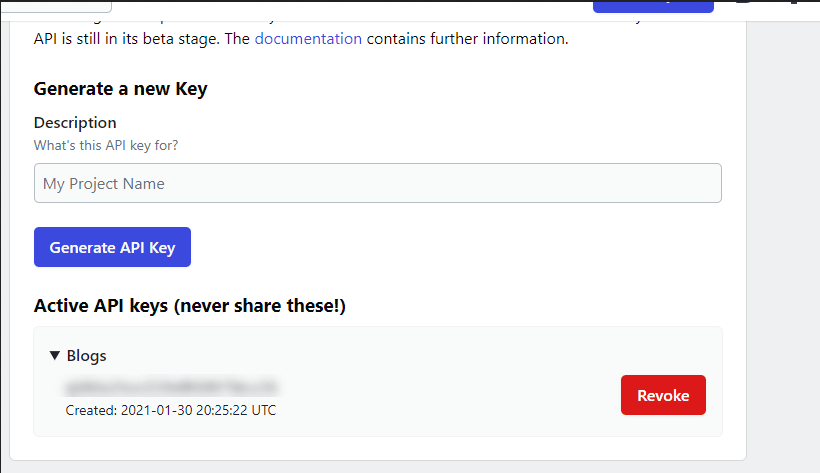
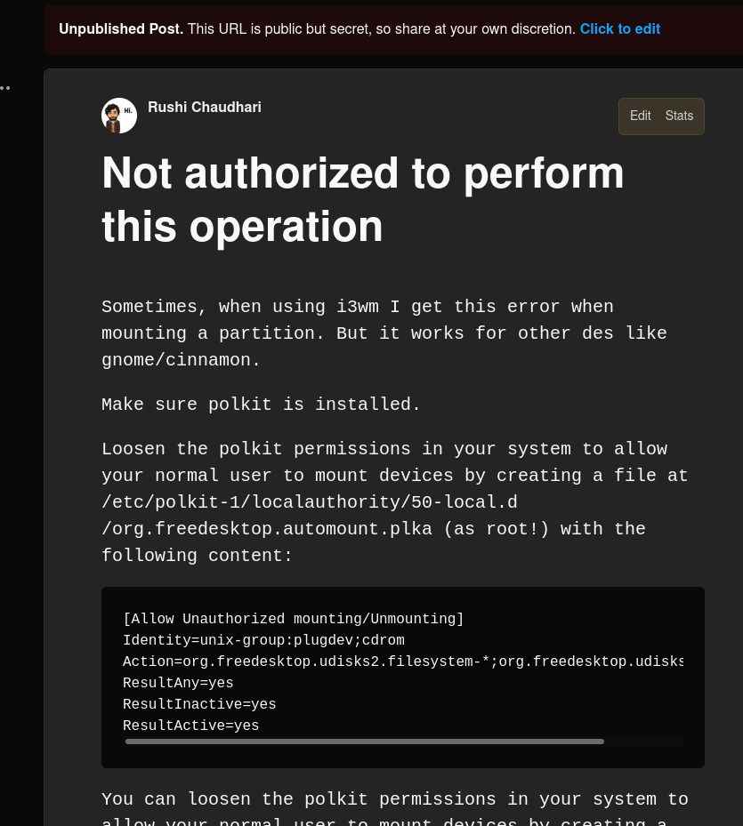

Why this tool?
- There are aleady a few github actions available like publish-devto and markdown-to-devto They seem to be failing despite of the valid data in the markdown file.
- For a large amount of posts there was no option to add a break and the API got overflowed.
Steps to set up
Creating API Keys in Dev.To
Login to dev.to and then go to accounts and create new api key.

Paste the key as DEVTO_TOKEN in Github Secrets
Set up the path for the Posts in devpush.py
By default it is content/posts/*.md
Script to push to dev.to
devpush.py
import json
import requests
import frontmatter
import glob
import os
from time import sleep
import re
'''
Hugo to DevTo
This script transforms a Hugo article into a format that can be pushed to the DevTo server.
'''
URL = "https://dev.to/api/articles"
ALL_PREVIOUS_ARTICLES = requests.get(
url=URL+"/me/all",
headers={"api_key": os.environ["DEVTO_TOKEN"]},
).json()
def check_if_article_exists(article):
for a in ALL_PREVIOUS_ARTICLES:
if a["title"] == article.title:
# print(a)
return a['id']
return None
class HugoArticle(object):
def assign_if_not_none(self, x, ind=None):
if x is not None and ind is None:
return x
elif x is not None and ind is not None and ind in x:
return self.assign_if_not_none(x[ind])
else:
return ""
def compare_already_existing_articles(self, title, body_markdown, tags):
# Set a flag no_change to skip POST/ PUT request if article already exists
for a in ALL_PREVIOUS_ARTICLES:
if "title" in a and "body_markdown" in a and a["title"] == title and a["body_markdown"] == body_markdown:
return True
return False
def __init__(self, article, published=False, series=None):
# Get title, text and tags from hugo markdown files
self.title = self.assign_if_not_none(article.metadata, "title")
# Set this to truw if you want to post and publish the article without saving as draft
self.published = published
body_markdown = self.assign_if_not_none(article.content)
relative_image_paths = re.findall("\!\[(.*?)\]\(\/img\/(.*?)\)", body_markdown)
for relative_image_path in relative_image_paths:
image = os.path.join(
"https://raw.githubusercontent.com/rushichaudhari/rushichaudhari.github.io/main/static/img",
relative_image_path[1],
)
body_markdown = body_markdown.replace(relative_image_path[1], image)
self.body_markdown = body_markdown
self.tags = self.assign_if_not_none(article.metadata, "tags")
# assign categories as tags if tags is none
if self.tags is None:
self.tags = self.assign_if_not_none(article.metadata, "categories")
self.series = series
self.no_change = self.compare_already_existing_articles(self.title, self.body_markdown, self.tags)
def get_article_from_file(filepath):
with open(filepath, "r") as f:
article = frontmatter.load(f)
return HugoArticle(article)
if __name__ == "__main__":
print("Starting devpush")
files = glob.glob('content/posts/*.md')
sleeptime = 5
print('DEVTO_TOKEN is ', os.environ["DEVTO_TOKEN"], os.getcwd(), files)
for file in files:
hugo_article = get_article_from_file(file)
if not hugo_article.no_change:
sleep(int(sleeptime))
this_dict = {"article": hugo_article.__dict__}
data = json.dumps(this_dict)
print(data)
existing_post_id = check_if_article_exists(hugo_article)
if existing_post_id is not None:
url=URL+"/"+str(existing_post_id)
result = requests.put(
url=url,
json=json.loads(data),
headers={"api_key": os.environ["DEVTO_TOKEN"]},
)
else:
result = requests.post(
url=URL,
json=json.loads(data),
headers={"api_key": os.environ["DEVTO_TOKEN"]},
)
print(file)
else:
print(file, "no change")
The workflow file will be something like
name: publish
on:
push:
branches:
- master
jobs:
publish:
runs-on: ubuntu-latest
if: "! contains(toJSON(github.event.commits.*.message), '[skip ci]')" # Skip CI if the commit message has [skip ci]
steps:
- uses: actions/checkout@v2
- name: setup python
uses: actions/setup-python@v2
with:
python-version: 3.8 #install the python needed
- name: Install python libs
run: pip3 install requests python-frontmatter
- name: execute py script # run the run.py to get the latest data
run: |
python ./.github/devpush.py #make sure to give the path to the devpush.py file
env:
DEVTO_TOKEN: ${{ secrets.DEVTO_TOKEN }}
SLEEP_TIME: ${{ secrets.SLEEP_TIME }}
MARKDOWN_POSTS_PATH: ${{secrets.MARKDOWN_POSTS_PATH}}
This post has ben published using the above script

It will appear as a draft, to directly publish it change the published flag to True in the hugo article.
Constraints
- This script handles conversion of relative paths to raw.githubusercontent paths, to do this all the relative image paths should start with
/img and not like ../../static/img
e.g.